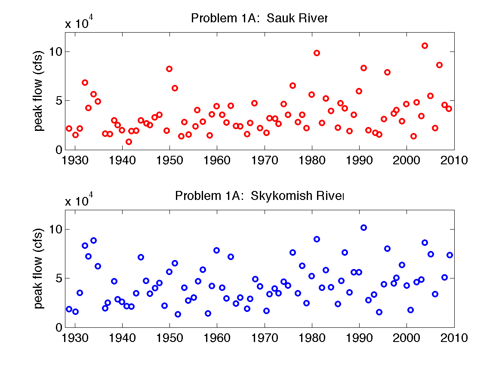

Homework 7
Due Thursday, November 14, before or at the start of class.
Problem 1 (60%) (based on Data Assimilation Lab, which is in Matlab):
Use Matlab, the ‘Assimilation Workshop 2014.zip’ folder of matlab files and your experience in the assimilation computer lab to answer the following questions:
-
Use ‘ExtractObservationsCourse.m’ to change the analysis years to 2000 to 2003, and run ‘EnKFCourse.m’ with the default parameters, the same we used in lab. Provide a plot and describe the major problems with the open loop model. Are they the same across all years? In which year did the open loop model perform the worst? Looking at only the spread in the ensemble of model predictions (Figure 2), would you have picked the same year to perform the worst? Why? Report the RMSE statistics for the open loop model, the filter model (which includes data assimilation), and for the snow course data vs. the snow pillow data (obs). Using the RMSE code (lines 97-99) as an example, also calculate the bias for each of these. (Note: Bias is the same as mean error – just modify the RMSE code to not take the square or the square root. If there are equal positive and negative errors, the bias should be 0.)
-
The default parameters were for a fairly well-calibrated and unbiased model. What if the model had more problems than this? Precipitation is very hard to measure. Assign the gauge undercatch (line 17 in ‘EnKFCourse.m’, NominalParams.GUC) a factor of 2 and re-run the simulation. Compare the plot of the results with the one you created in part a; what differences do you see? Report the RMSE and bias for the open loop and filter loop (the EnKF model) and compare to those you calculated in part a. What do these results tell you about data assimilation when using a biased model?
-
Return the gauge undercatch parameter to its original value (1.2). Now, instead of looking at a biased basic model, look at a model with greater precipitation uncertainty. Change the coefficient of variation on the precipitation from 40% to 80%. (Change line 30 to ‘covPrecip=0.8;’). Run the EnKFCourse.m code again, and compare the plots, RMSE, and bias with those in parts a and b.
-
Return covPrecip to 0.4. Now, test the effect of changing the uncertainty associated with the observations being assimilated. stdZ represents the standard deviation in the snow course measurements (30 mm), and r is the associated variance (stdZ^2). Increase the standard deviation. (Type ‘stdZ=100;’ and ‘r=stdZ.^2;’ in the code at line 11 (after the ObservationsCourse.mat file is loaded).) Run the code again, and compare the plots, RMSE, and bias with those in parts a, b, and c. Repeat the above with ‘stdZ=10;’ and compare both. Discuss your results.
Problem 2: The best graphics (20%)
One of our greatest challenges in data analysis is to be able to visualize the information in the data and convey that information to others. Consider various scientific papers you have read (on any subject related to water or air) and pick out your favorite graphical representation of data (e.g., the best figure). Paste your top two choices here with a brief statement of why you chose these.
Graduate Students: Problem 3: Project Update (20%)
Write out three clear (specific) questions that you are trying to answer in your project. For each question, provide 1-2 graphs that illustrate the answer to that question, as well as a couple sentences of explanation to accompany each graph (explain what you did to generate the graph, and what the graph shows). Do you think your answers are clear, or is further work needed? If you feel additional tests/analyses are needed, describe what you plan to do. If there are areas where you feel you need additional guidance, please describe the issues here.
Undergraduate Students: Problem 3: Statistics Synthesis (20%)
You are given the below dataset of annual peak flows on the Sauk River:

Note, you do not need to do any actual analysis here. Rather, for each of the following questions about this dataset, I want you to answer, a) How do you ask this statistically? b) What tools should you use? (Think of techniques we’ve learned in class.), and c) What should you be careful of /careful about? (Think of caveats and requirements of the tools you’re recommending).
- 3.1: Presume some logging occurred in the watershed in 1970. Are peak flows higher after 1970 than before 1970?
- 3.2: Presume some logging occurred in the watershed in 1970. Have peak flows become more variable after 1970 than before 1970?
- 3.3: If the mean annual peak flow has increased to above 50,000 cfs, the town will rebuild the levees. What are the chances that our statistical test would fail to identify this change?
- 3.4: Has there been a trend in peak flows between 1930 and 2010? How fast are peak flows changing, and is this trend significant?